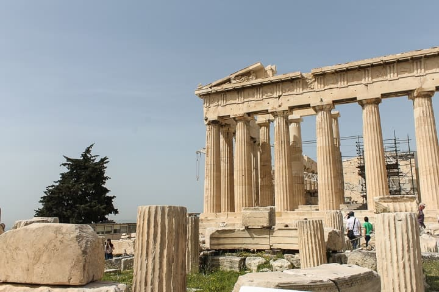

Torre Eiffel, Paris, França:

A Torre Eiffel é um dos ícones mais reconhecíveis do mundo e um dos principais pontos turísticos de Paris. Projetada por Gustave Eiffel para a Exposição Mundial de 1889, ela tem 324 metros de altura e oferece uma vista deslumbrante da cidade a partir de seus decks de observação. Os visitantes podem subir a t
Coliseu, Roma, Itália:

O Coliseu é um anfiteatro antigo localizado no coração de Roma e é um dos monumentos mais icônicos do mundo. Construído no século I d.C., era usado para espetáculos públicos, incluindo gladiadores e competições esportivas. Hoje, os visitantes podem explorar as ruínas deste incrível exemplo de arquitetura romana e aprender sobre a história fascinante por trás do local.
Acrópole de Atenas, Grécia:
A Acrópole de Atenas é uma antiga cidadela localizada no topo de uma colina em Atenas, Grécia. Ela é um dos principais locais arqueológicos do mundo e abriga vários edifícios históricos, incluindo o Partenon, um templo dedicado à deusa Atena. Os visitantes podem explorar as antigas ruínas e apreciar a arquitetura clássica enquanto desfrutam de uma vista panorâmica da cidade de Atenas.